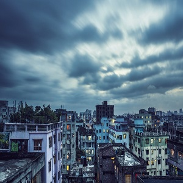
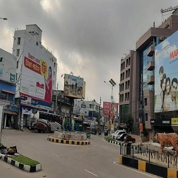
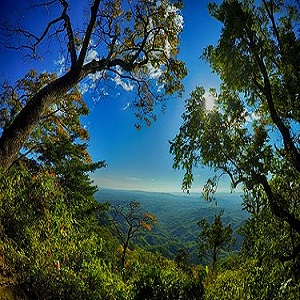

Bangladesh (/bæŋləˈdɛʃ/;[15] Bengali: বাংলাদেশ, pronounced [ˈbaŋlaˌdeʃ] (audio speaker iconlisten)),
officially the People's Republic of Bangladesh, is a country in South Asia. It is the eighth-most
populous country in the world, with a population exceeding 163 million people in an area of either
148,460 square kilometres (57,320 sq mi) or 147,570 square kilometres (56,980 sq mi),[7][16] making
it
one of the most densely populated countries in the world. Bangladesh shares land borders with India
to
the west, north, and east, Myanmar to the southeast, and the Bay of Bengal to the south. It is
narrowly
separated from Nepal and Bhutan by the Siliguri Corridor; and from China by 100 km of the Indian
state
of Sikkim in the north.[17] Dhaka, the capital and largest city, is the nation's economic,
political,
and cultural hub. Chittagong, the largest seaport, is the second-largest city.
Bangladesh All Divisions

Dhaka
Dhaka Division (Bengali: ঢাকা বিভাগ, Ḑhaka Bibhag) is an administrative division within
Bangladesh.[2] Dhaka is the capital city of Bangladesh and also the largest city as well of the
country. It comes among the 10 most populous cities of the world. The Division as constituted prior
to 2015 covered an area of 31,051 km2,[2] and had a population of 47,424,418 at the 2011 Census.
However, following the separation of the new Mymensingh Division in 2015,the area has been reduced
to 20,508.8 km2 with a population at the 2021 Census of 21,741,005.
Dhaka Division borders every other division in the country except Rangpur Division. It is bounded by
Mymensingh Division to the north, Barisal Division to the south, Chittagong Division to the east and
south-east, Sylhet Division to the north-east, and Rajshahi Division to the west and Khulna
Divisions to the south-west.
Rajshahi
Rajshahi Division (Bengali: রাজশাহী বিভাগ) is one of the eight first-level administrative divisions
of Bangladesh. It has an area of 18,174.4 square kilometres (7,017.2 sq mi)[2] and a population at
the 2011 Census of 18,484,858.[3] Rajshahi Division consists of 8 districts, 70 Upazilas (the next
lower administrative tier) and 1,092 Unions (the lowest administrative tier). The divisional capital
of Rajshahi is only six hour road journey away from Dhaka, the capital city.
The region has historically been dominated by various feudal Rajas, Maharajas and Zamindars.[4]
Formerly comprising 16 districts, a new division (Rangpur Division) was formed with the 8 northern
districts of the old Rajshahi Division from early 2010.[2]

Khulna
Khulna Division (Bengali: খুলনা বিভাগ) is one of the eight divisions of Bangladesh. It has an area
of 22,285 km2 (8,604 sq mi) and a population of 15,563,000 at the 2011 Census (preliminary returns).
Its headquarters and largest city is Khulna city in Khulna District.

Chattagram
Chittagong Division, officially known as Chattogram Division, is geographically the largest of the
eight administrative divisions of Bangladesh. It covers the south-easternmost areas of the country,
with a total area of 33,909.00 km2 (13,092.34 sq mi)[2] and a population at the 2011 census of
28,423,019.^[6] The administrative division includes mainland Chittagong District, neighbouring
districts and the Chittagong Hill Tracts.